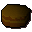

Chocolate dust
| Config name | chocolate_dust |
| Item id | 1975 |
| Value | 2 gp |
| Weight | 150g |
| Members | Yes |
| Tradeable | Yes |
| Stackable | No |
| Defined in | scripts/skill_cooking/configs/cooking_generic/cooking.obj |
Chocolate dust
It's ground up chocolate.
How to make
| Skill | Level | XP | Ingredients | Tool | How | Where | Makes |
|---|---|---|---|---|---|---|---|
| Herblore | 1 | use on item | 1 members; grind |
Used to make
| Skill | Level | XP | Ingredients | Tool | How | Where | Makes |
|---|---|---|---|---|---|---|---|
| Cooking | 1 | 30.0 | use on item | ||||
| Cooking | 1 | 30.0 | use on item | ||||
| Cooking | 1 | 30.0 | use on item | can spoil into Odd cocktail; members; the wrong topping spoils it | |||
| Cooking | 1 | use on item | |||||
| Cooking | 50 | 30.0 | use on item |  Chocolate cake | |||
| Herblore | 26 | 67.5 | use on item | members |
Sold at
| Shop | Shopkeeper | Stock |
|---|---|---|
| Grand Tree Groceries | 5 | |
| Funch's Fine Groceries | 5 |
Referenced in scripts
scripts/_test/scripts/debug/debug_gnomecooking.rs2scripts/areas/area_gnome/scripts/gnome_bar.rs2scripts/areas/area_gnome/scripts/gnome_restaurant.rs2scripts/skill_cooking/scripts/cooking_inv/scripts/cakes/cakes.rs2scripts/skill_cooking/scripts/gnome_cooking/gnome_cocktail_finish.rs2scripts/skill_cooking/scripts/gnome_cooking/gnome_food_finish.rs2